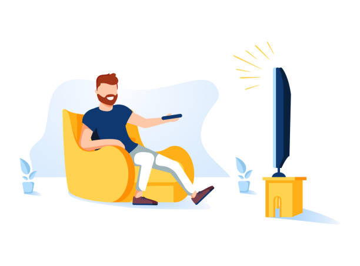

Listening to Music
I have always loved listening to music. It's my escape from the world and a way to relax after a
long day. Whether it's pop, rock, or classical, music brings joy and energy into my life. Some
of my favorite artists include Taylor Swift, The Beatles, and BTS.
Music has a way of connecting people and evoking emotions like nothing else. It expands my
horizons and helps me understand different cultures. Music is more than a hobby for me – it's a
passion!
Watching Movies

Watching movies is another hobby I am deeply passionate about. I love the experience of diving
into different worlds and seeing stories unfold on the big screen. My favorite genres include
action, sci-fi, and mystery. Some of my top picks are *Inception*, *The Matrix*, and
*Interstellar*.
Movies have a unique way of inspiring creativity. They offer entertainment and a reflection of
our society, making watching movies both a pastime and a way of learning.